Optimising the similarity between parametric shapes is crucial across computer-vision tasks. Intersection-over-Union (IoU) is the canonical metric, yet existing objective functions either correlate weakly with IoU, are limited to simple shapes, or are computationally expensive. Marginalised Generalised IoU (MGIoU) addresses these limitations by projecting structured convex shapes onto their unique normals and computing a 1-D normalised GIoU. MGIoU is simple, differentiable, efficient, and highly correlated with true IoU. We extend it to MGIoU+ for unstructured convex shapes, unifying shape optimisation across diverse domains. Experiments show consistent performance gains and 10-40 × faster loss computation. Finally, MGIoU- minimises overlaps, enabling collision-avoidance objectives such as safer trajectory prediction.
Given two arbitrary shapes \(P, G \subseteq \mathbb{R}^D\) (with \(D=2\) in 2-D and \(D=3\) in 3-D) and vertex sets \(\mathbf P\in\mathbb R^{N_P\times D}\), \(\mathbf G\in\mathbb R^{N_G\times D}\), MGIoU first builds a set of unique shape normals \(\mathcal A\). In 2-D polygons the normals are 90° rotations of edge vectors; in ellipses they align with the semi-axes; in 3-D they become face normals. Duplicate or parallel directions are pruned, leaving a compact basis (e.g. a rotated rectangle needs only two normals, a cuboid needs three), reducing abundant computations.
For every Normal \(\mathbf a\in\mathcal A\) and the projection of \(P\) and \(G\) onto \(\mathbf a\), we compute the 1-D GIoU:
where \(C_{a}\) is the smallest 1-D interval enclosing the projections \(P_{a}\) and \(G_{a}\) onto normal \(\mathbf a\).
MGIoU and MGIoU+ thus compute a marginalised one-dimensional version of GIoU along all unique normals, yielding a fast, scale-invariant loss.
Owing to its derivation from the Jaccard index via the Generalised IoU formulation, the MGIoU loss \(\mathcal{L}_{\text{MGIoU}} = (1-\operatorname{MGIoU})/2\) fulfils all axioms of a metric and remains scale-invariant:
These guarantees endow the loss with theoretical robustness and a tight correlation with Intersection-over-Union, ensuring consistent optimisation behaviour across varied shapes, scales, and applications.
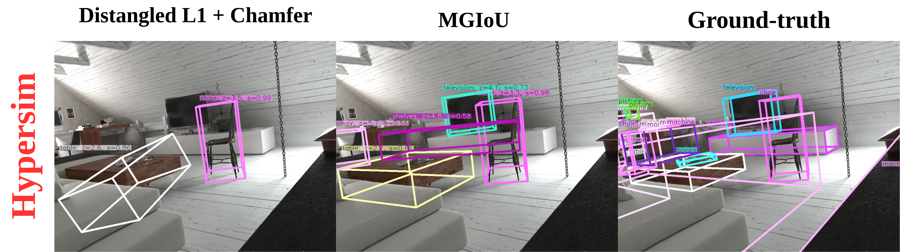
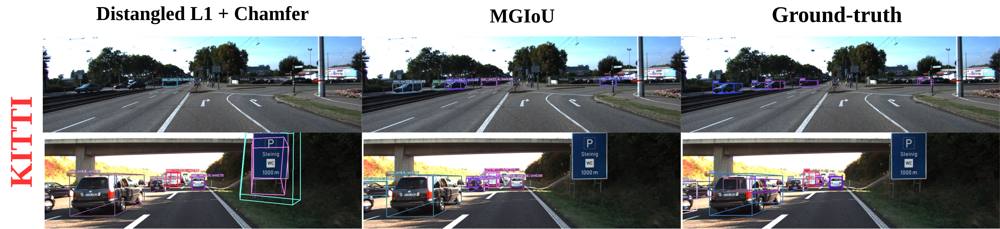
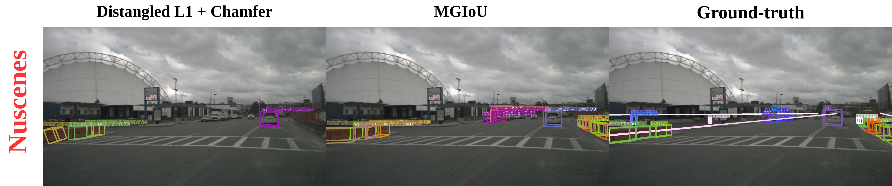
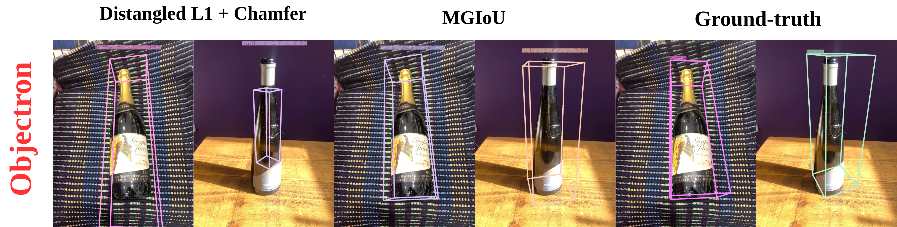
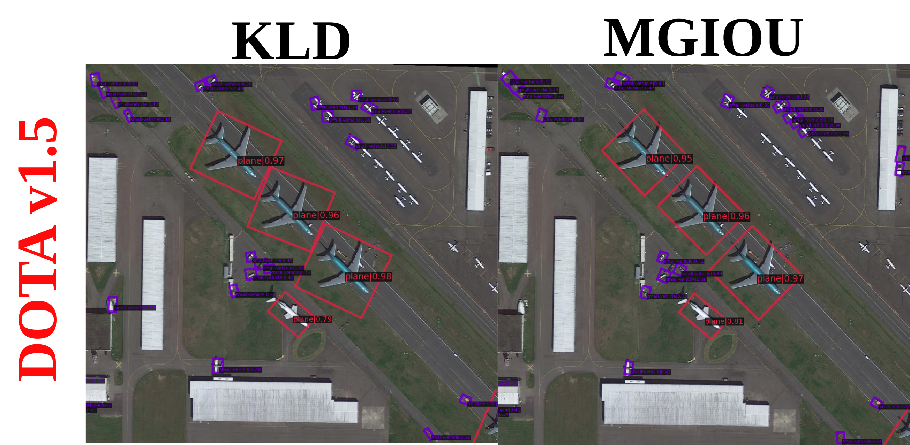
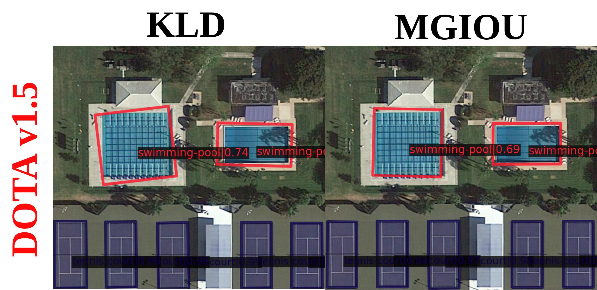
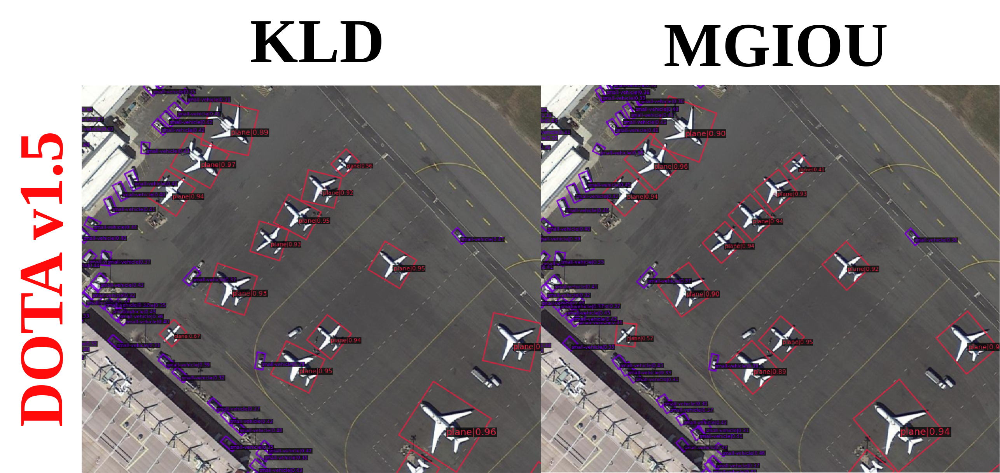
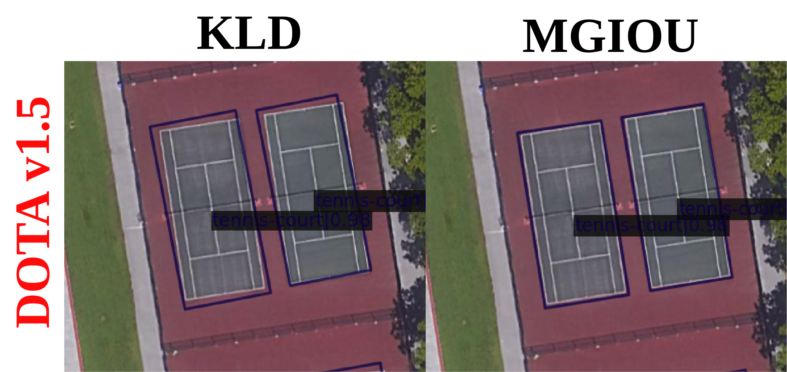
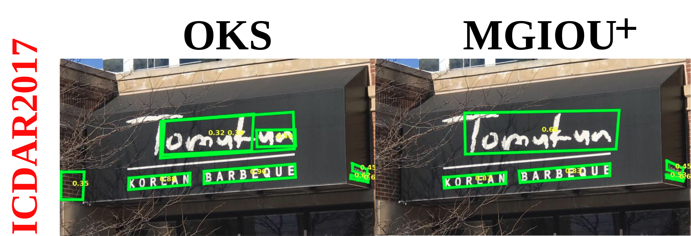
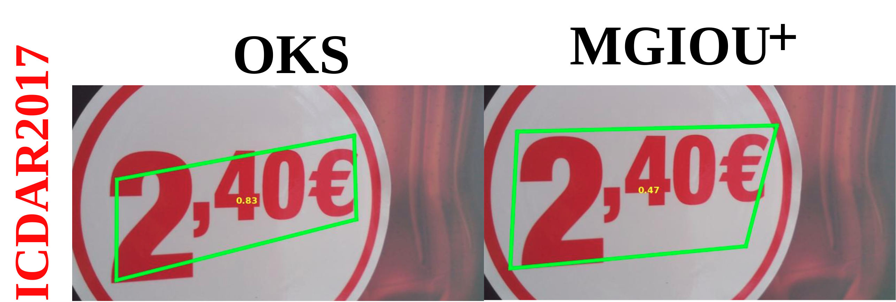
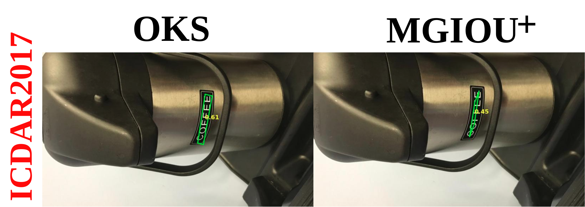
MGIoU- converts MGIoU into a
repulsion loss by (i) taking the
smallest
1-D GIoU across the set of shared shape normals and
(ii) passing that value through a ReLU activation to stop penalising as soon as
the shapes are non-overlapping.
where \(\mathcal A_{ij}^t\) contains the unique normals of the two convex shapes at time t.
where \(B\) is the number of agents, \(T\) is the number of time-steps, zero loss is achieved only when every pair of visible agents is non-overlapping at all timesteps, making the objective ideally suited to collision-free trajectory prediction, layout design (without considering temporal information \(T\)), and any task requiring differentiable overlap avoidance.
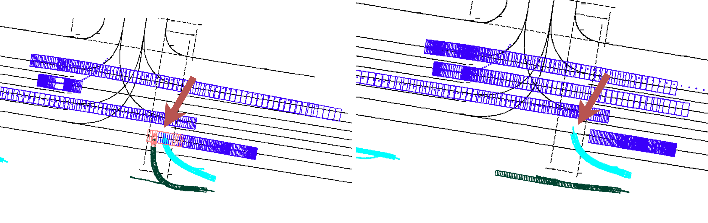
Car yields to pedestrian and cyclist.
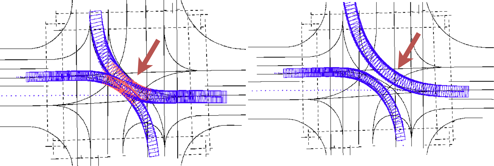
Both cars curve through the junction without collision.
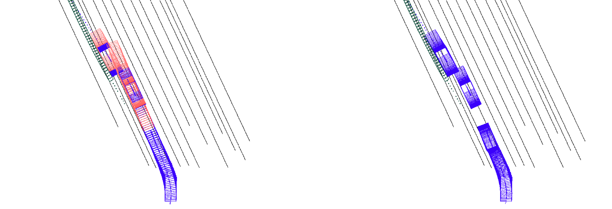
Cars maintain a safe distance while accelerating
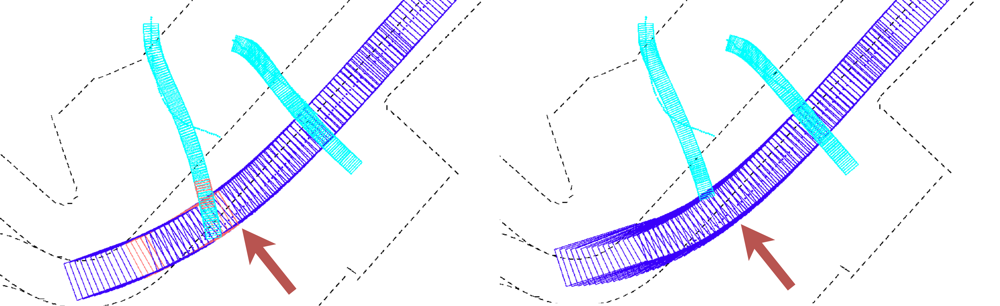
Pedestrian makes a safe crossing
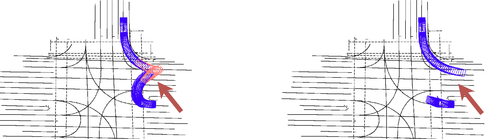
Car adjusts its turn to avoid a side-swipe on the bend.
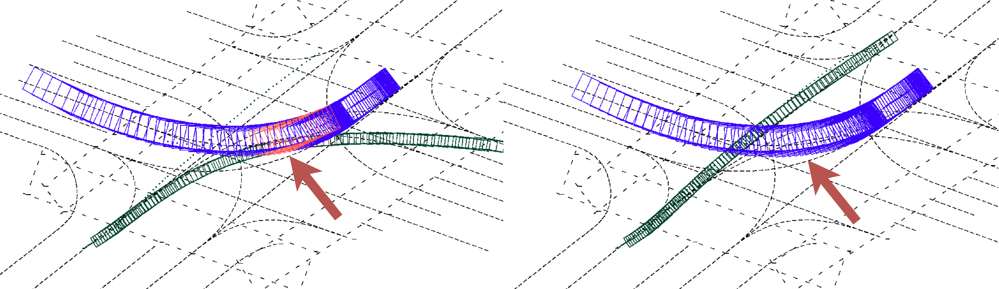
Car curves past the crossing cyclist without collision.

Merging cars adjusts their paths to clear the oncoming curve without conflict
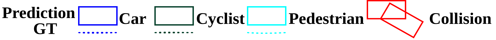
Qualitative Results Waymo dataset, showing that MGIoU- can be used to optimise the trajectory of multiple agents in a scene, reducing the overlap/collision in predicted trajectories of road agents.
@misc{le2025mgiou,
title = {Marginalized Generalized IoU (MGIoU): Unifying Parametric Shape Optimization},
author = {Duy-Tho Le and Trung Pham and Jianfei Cai and Hamid Rezatofighi},
year = {2025},
eprint = {2404.04629},
archivePrefix = {arXiv},
primaryClass = {cs.CV}
}